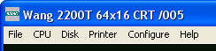
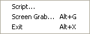
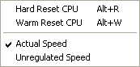
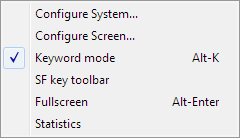

WangEmu Menus
The menu structure can be viewed all at once in this diagram. Click on a menu to read some description of what the various items do.
| Top level menu:
 |
|||||
| File menu:  |
CPU menu:  |
Disk menu: |
|||
Printer menu: |
Configuration menu:  |
Help menu: |
|||
File menu:
The File menu is kind of a catch-all. The three menu items are:
| Script... | This menu item is used to feed the contents of a text file to the emulator, as if it had been typed at the emulated keyboard. Script files can include other script files, and there are a few escape mechanisms for entering special key values and such. Please jump to the help page dedicated to script file use. |
| Screen Grab... | This menu item will send the current contents of the emulated CRT display to a file in .BMP format. When selected, a file picker dialog will pop up to let you say where the file should be saved. You can also type Alt-G to invoke this function. |
| Exit | This function causes the emulator to shut down. Upon shutdown, the various emulator configuration options are saved to the configuration file, wangemu.ini. The emulator can also be shut down with the Alt-X shortcut, or by clicking the "close window" button in the upper right corner of any emulated CRT display. |
CPU menu:
The CPU sub-menu allows the user to control some of the features of the emulated CPU. Still other options are accessible from the configuration menu.
| Reboot CPU | Selecting this item will cause the emulator to emulate a power cycle of the system, as if the machine had just been powered up. All contents of the emulated memory will be lost, and possibly any emulated I/O device may leave its emulated I/O file state corrupt. |
| Reset CPU | Selecting this item, or pressing Shift-Alt-R, will cause the emulator emulate a soft (warm) reset of the system. On the first generation machines, they keyboard had a small reset button, and on the MVP-class of machines, pressing Shift RESET at the terminal would cause a soft reset. The program image and the variable state will be preserved, but the program can not be CONTINUE'd if it was running at the time of the RESET. The I/O addresses for the CI, CO, LIST, INPUT, PRINT, TAPE, DISK, and PLOT logical units will be set back to their defaults. |
| Actual Speed | This is the default setting. WangEmu will try to run the simulation at the speed of an actual 2200. |
| Unregulated Speed | Selecting this item will make the emulator attempt to run the 2200 microcode as fast as possible. The actual speed of the emulated 2200 depends, of course, on the speed of the host CPU running the emulator, but also somewhat on the amount of screen activity, as it takes cycles to redraw the contents of the CRT every frame. |
Disk menu:
This sub-menu allows inserting and removing virtual disks into the emulated disk drives. It allows allows creating new virtual disks, reformatting existing virtual disks, and inspecting the contents of existing disks.
If there is more than one disk controller present in the emulated system, then new menu items will appear on the Disk menu. Here is what it looks like with the system configured with two virtual disk controllers, one at /310 and one at /320. There are disks in each of the drives at /310 and nothing in either drive of the controller at /320:

You can also insert and remove virtual disks by clicking on the disk icons on the status bar. In the example below, the system has two disk controllers. The left two are the drives associated with the first disk controller (/310 above) and the second two disks are the drives associated with the second disk controller (/320 above). In this case, the first two disks have floppies inserted in them (note that the "door" is closed), the fixed disk of the second controller is a hard disk (indicated by the disk pack), and the second drive of the second controller is empty (note that the door is open). A red dot will indicate which drive is being accessed while disk activity is occurring.

You can inspect the contents of a drive by holding down the Ctrl key and clicking on the drive with the left mouse button.
Printer menu:
This sub-menu appears only if the system is configured with one or more printer controllers. The menu above is for a system with a single printer controller configured for I/O address 0x15. If the system has more than one printer, all the printers are listed in the menu. Most of the printer functionality and configuration is performed via the menu attached to the printer window, described elsewhere.
Show printer
Selecting "Show printer /2nn" causes the window corresponding to the printer controller at the I/O address nn to appear or move to the foreground. The printer menu system is described elsewhere.
Print And Clear All
The default configuration is for printer output to get logged into the printer window but not to actually print on the real system printer. This menu item causes any printer devices to print out the contents of their log windows on the real system printer and then clear the print log.
Configure menu:
This is covered in the configuration help page.
Help menu:
The "Website" item launches a browser pointed at the Wang 2200 homepage. All of the other menu items launch a browser at a local html file offering some help on the named subject.
The "Release Notes..." item brings up the list of features and changes for the current version of the emulator. To view the file, it uses whatever your system preferences are for reading .txt files.
The "About" item simply displays some credits and version information.